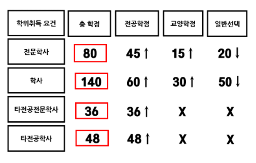

- 학점이수방법
- 학위종류 및 취득조건
- 주의사항
- 학습플랜예시
학위종류 및 취득조건
학점은행제 학위종류
- 전문학사
: 전문대학 졸업자에게 주는 학위
- 학사
: 4년제 대학 졸업자에게 주는 학위
- 타전공 학사/전문학사
:
이미 학사 또는 전문학사학위를 취득한 자가
다른전공분야의 학사학위 또는 전문학사학위를 취득하고자 할 때 주는 학위
학위취득 조건
- 전문학사
: 전공 45 + 교양 30 + 일반 20 > 총 80학점 필요
- 학사
: 전공 60 + 교양 30 + 일반 50 > 총 140학점 필요
- 타전공 학사/전문학사
:
타전공 학사 48학점 / 타전공 전문학사 36학점

전공 종류
학점은행제 학사학위 전공 종류
- 가정학사 : 식품조리학, 의상학
- 간호학사 : 간호학
- 경영학사 : e-비즈니스학, 경영학, 무역학, 회계학
- 경제학사 : 경제학
- 공학사 : 건축공학, 건축설비학, 게임프로그래밍학, 교통공학, 금속공학, 기계공학, 기계설계공학, 기관공학, 매체공학, 멀티미디어학, 메카트로닉스학, 산업공학, 섬유공학, 소방학, 안전공학, 음향공학, 인공지능, 자동차공학, 전기공학, 전자공학, 전파공학, 정보보호학, 정보통신공학, 제어계측공학, 조선공학, 컴퓨터공학, 토목공학, 항공정비공학
- 관광학사 : 관광경영학, 외식경영학, 호텔경영학
- 광고학사 : 광고학
- 군사학사 : 군사행정학, 군수관리학, 지상전학
- 무용학사 : 무용학
- 문학사 : 국어국문학, 노년학, 독어독문학, 문예창작학, 불교학, 사학, 상담학, 심리학, 아동학, 영어영문학, 외국어로서의한국어학, 일어일문학, 중어중문학, 철학, 청소년학, 프랑스어문학, 한문학
- 문헌정보학사 : 문헌정보학
- 미술학사 : 공예, 도예, 동양화, 사진학, 산업디자인, 시각디자인학, 실내디자인, 아동미술학, 화훼조형학, 회화
- 미용학사 : 미용학
- 법학사 : 법학
- 보건학사 : 물리치료학, 방사선학, 안경광학, 의무기록학, 임상병리학, 작업치료학, 치기공학, 치위생학
- 세무학사 : 세무학
- 수사학사 : 범죄수사학
- 신학사 : 가톨릭신학, 신학
- 예술학사 : 디지털아트학, 모델학, 방송영상학, 연극학, 영화학
- 음악악사 : 관현악, 교회음악, 국악학, 성악, 실용음악학, 음악학, 작곡, 피아노
- 이학사 : 대기과학, 생명과학, 수학, 식품생명공학, 원예학, 전자계산학
- 지식재산학사 : 지식재산학
- 체육학사 : 건강관리학, 경호비서학, 체육학, 태권도학
- 패션학사 : 패션디자인학, 패션비즈니스학
- 해양학사 : 항해학
- 행정학사 : 부동산학, 사회복지학, 행정학
학점은행제 전 전공 종류
- 가정전문학사 : 생활교양, 식공간연출, 식품가공, 식품조리, 아동·가족
- 경영전문학사 : 경영, 마케팅정보, 무역, 산업·정보시스템경영, 전자상거래
- 공업전문학사 : 건축, 건축물관리, 게임그래픽, 게임디자인, 금형제작, 기계, 기계설계, 기계재료, 기계전자, 멀티미디어, 방송음향, 비파괴검사, 산업기계정비, 생산기계, 소방안전관리, 시스템제어, 신재생에너지, 안전공학, 열기계, 열냉동, 용접공학, 유비쿼터스설비제어, 인터넷정보, 임베디드시스템, 자동제어, 자동차정비, 자동차튜닝, 자동화설비, 전기, 전기공사, 전산응용건축설계, 전산응용기계, 전산응용기계설계, 전자, 전자기기, 정보보호, 정보시스템개발, 정보처리, 정보통신, 정보통신설비, 조선, 치구공설계, 컴퓨터그래픽, 컴퓨터네트워크, 토목, 항공정비, 화학공업, 환경관리
- 관광전문학사 : 관광경영, 관광식음료, 항공서비스, 호텔제과제빵, 호텔조리
- 군사전문학사 : 군사행정, 군수관리, 지상전, 항공기술, 항공작전, 해상전
- 농업전문학사 : 관상원예, 농업경영
- 산업예술전문학사 : 가구디자인, 건축디자인, 광고디자인, 귀금속공예디자인, 도자기공예, 만화예술, 미용, 방송영상, 산업공예, 산업디자인, 세트디자인, 시각디자인, 연극, 영화제작, 인테리어디자인, 전자편집디자인, 컴퓨터산업디자인, 패션디자인, 패션비즈니스
- 생명산업전문학사 : 바이오공학, 애완동물관리
- 언어전문학사 : 영어, 일본어
- 예술전문학사 : 공예, 국악, 기악, 뮤지컬, 미술, 사진, 실용무용, 실용음악, 화예
- 이료전문학사 : 이료
- 체육전문학사 : 레저스포츠, 바둑, 의전경호
- 행정전문학사 : 경찰행정, 보건행정, 비서행정, 사회복지
학점은행제 홈페이지 참고